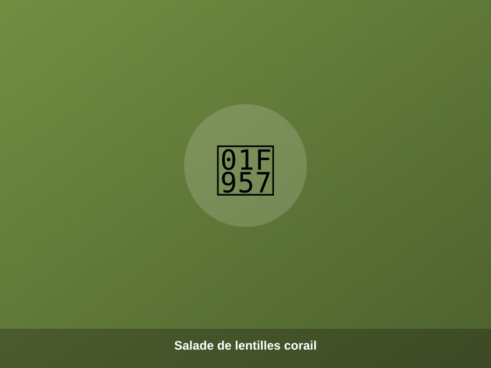
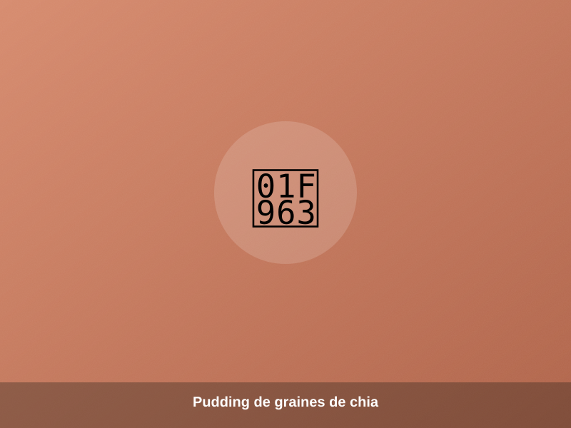
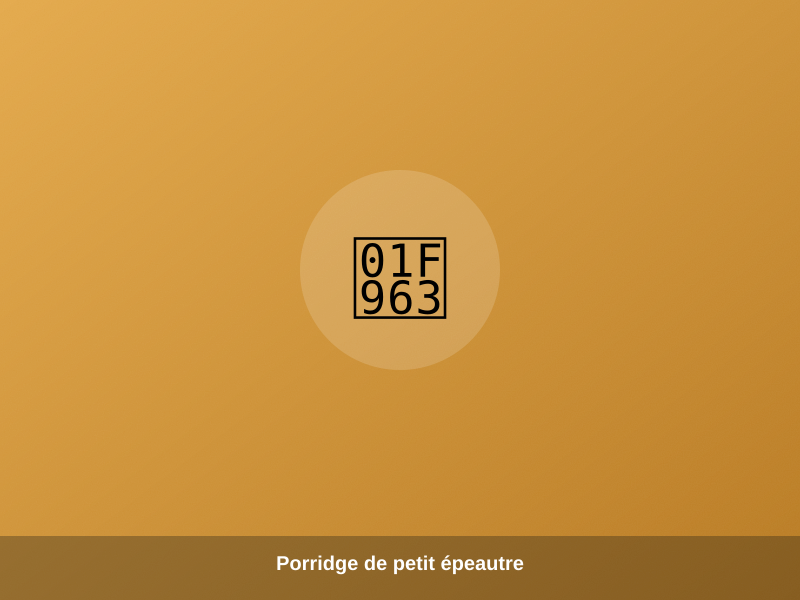
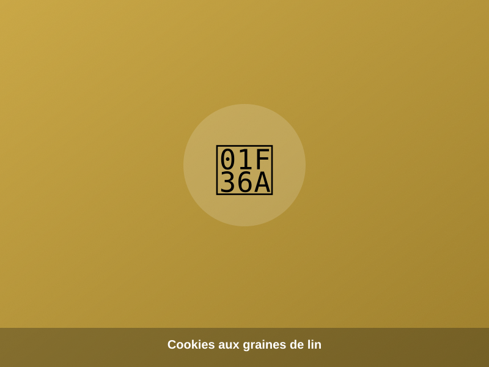

Risotto de petit épeautre au chèvre
Petit épeautre, échalote, vin blanc et crottin de chèvre fondu : un risotto paysan et réconfortant.
Télécharger (PDF)Fiche temps de cuisson, recettes salées et sucrées : cuisinez nos céréales, légumineuses et graines bio comme des chefs.

Casserole, cocotte-minute, four ou micro-ondes : retrouvez en un coup d'œil le temps de cuisson idéal pour chacun de nos produits (pois, haricots, lentilles, céréales...).
Télécharger la fiche cuisson (PDF)Petit épeautre, échalote, vin blanc et crottin de chèvre fondu : un risotto paysan et réconfortant.
Télécharger (PDF)
Fraîche et colorée, relevée d'agrumes et d'herbes du jardin.
Un plat généreux et épicé, pensé pour les grandes tablées.

Graines de chia, lait de coco, miel, mangue et yaourt grec : un dessert healthy et gourmand.
Télécharger (PDF)
Un petit-déjeuner réconfortant à base de céréales de la ferme.

Croustillants à l'extérieur, moelleux à l'intérieur, avec nos graines de lin doré.
Découvrez toute notre gamme de céréales, légumineuses, graines et légumes 100% bio.